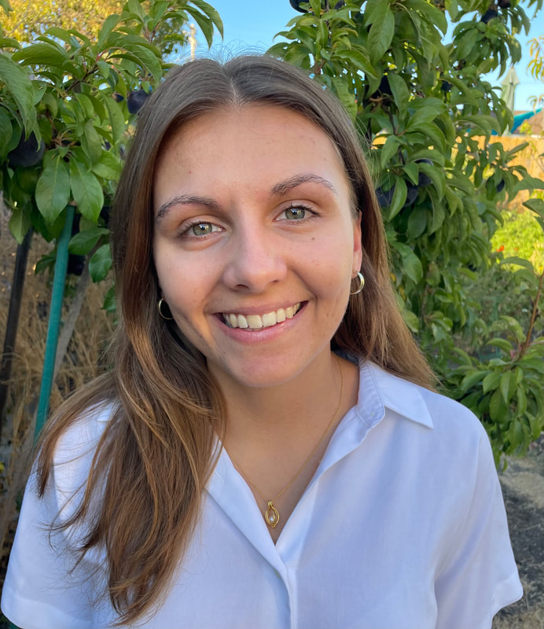

Yulia Gutierrez
Graduate Student · Biophysics
In the lab: 2024–present
Designing a protein system that exhibits zero-order ultrasensitivity.
Shurl and Kay Curci Foundation Ph.D. Scholarship
Achievement Rewards for College Scientists (ARCS) Scholarship
Education
- B.A., Biological Sciences, Northwestern University
Publications
- Martell, C. M., Gebis, K. K., Van, H. M., Gutierrez, Y. M., Jung, M. D., Savas, J. N. & Rocklin, G. J. Global Analysis of Aggregation Determinants in Small Protein Domains. Preprint at https://doi.org/10.1101/2025.11.11.687847 (2025).
- Gutierrez, Y. M. & Rocklin, G. J. Structural and energetic analysis of stabilizing indel mutations. Preprint at https://doi.org/10.1101/2024.12.18.629072 (2024).